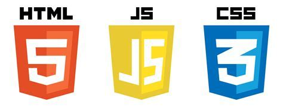

About Me
Hello!! I am Alyza Shavers, a junior software developer passionate about technology ad coding.
My journey in the world of software development started with a strong curiosity and a desire to create solutions that make a difference. I'm always eager to learn and embrace new challenges in the ever-evolving tech landscape.
My Skills
- Web Development: CSS, HTML, and JavaScript
- Version Control: Git 
My Interests
When I'm not coding, I have a variety of interests and hobbies that keep me engaged:
- Working Out: You can find me in the gym. Fitness is not just a hobby; it's a crucial part of my life. I believe that a strong and healthy body complements a sharp mind. Whether it's lifting weights or full body stretching, I find that working out not only keeps me physically fit but also helps me stay focused and motivated in my coding endeavors. It's all about maintaining balance and ensuring that both my mind and body are in top form.
- Traveling: I have an insatiable wanderlust. Traveling is a way of expanding my horizons and gaining new perspectives. Exploring different cultures, trying exotic cuisines, and embarking on adventures around the globe are experiences that I cherish. Traveling teaches me adaptability, problem-solving, and the importance of embracing diversity; qualities that also resonate in my approach to coding. Whether I'm hiking through the mountains or strolling through historic cities, my travles inspire me and fuel my creativity, making me a more well-rounded developer.
I'm excited to be on ths journey, and I look forward to bringing my enthusiasm and problem-solving skills to every project I work on.